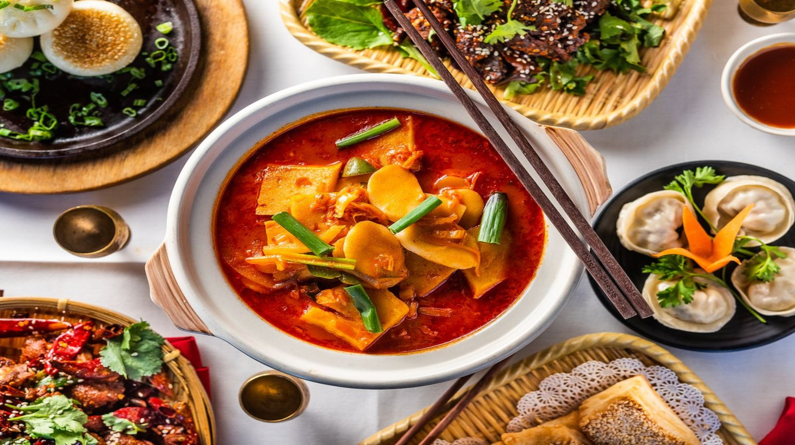

Chinese Cuisine

Chinese cuisine is renowned for its diversity and bold flavors, featuring dishes like sweet and sour pork, kung pao chicken, and dumplings. It varies greatly by region, with Cantonese, Sichuan, and Hunan cuisines offering unique tastes. Ingredients often include rice, noodles, vegetables, and meats.
Chinese cuisine also emphasizes balance and harmony in flavors, often combining sweet, sour, salty, and spicy elements in a single dish. Techniques like stir-frying, steaming, and braising are commonly used, showcasing the cuisine’s versatility and depth.